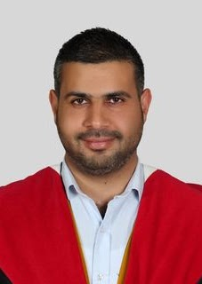
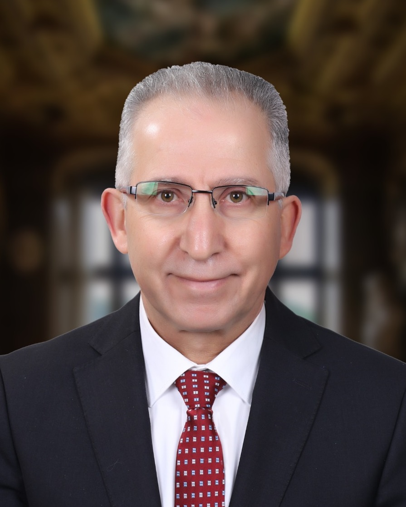
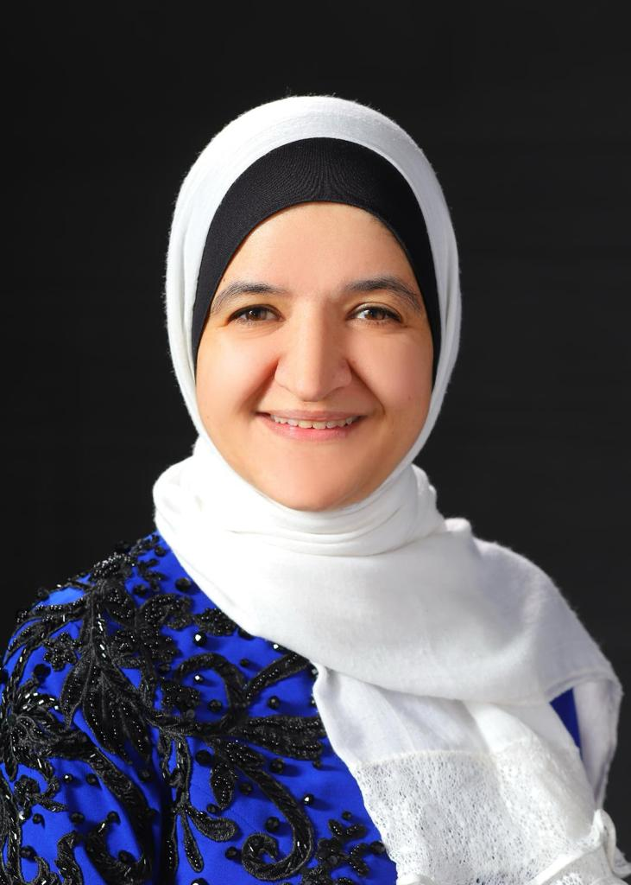
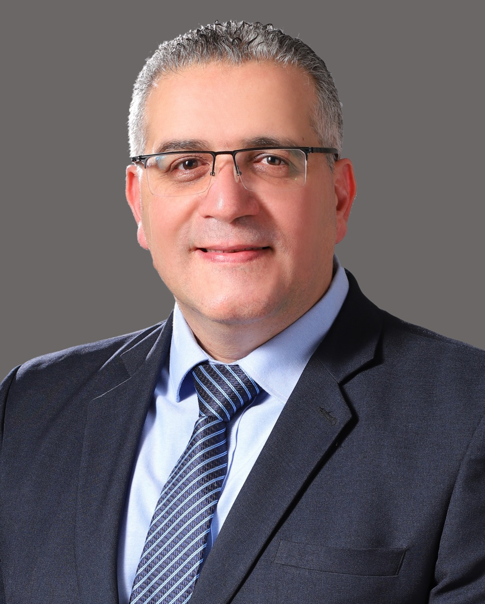
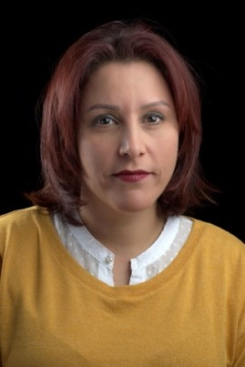

Experience the Future of
AI-Driven Care, Designed for You, With Youvision
To revolutionize the field of dentistry by harnessing the power of AI, one diagnosis at a time, providing a second opinion to every dentist by leveraging state-of-the-art technology, leading to more accurate and robust diagnoses of diverse dental problems.

Segmentation
Our computer algorithms identify and isolate specific regions within dental images, aiding dentists in detecting dental issues and improving diagnosis, treatment planning, and patient care.
Detection
Our computer algorithms pinpoint specific dental abnormalities within dental images, helping dentists identify dental problems, leading to more robust diagnosis, treatment planning, and improved patient care.
CNN
Our product utilizes Convolutional Neural Network (CNN), an advanced computer algorithm that automatically analyzes dental images, aiding dentists in detecting dental pathologies and improving their diagnosis, which ultimately improves patient care.
Fast and Accurate Detection
Fast and accurate detection leads to prevention. Our product aims to detect dental caries in the early stages and prevent them from progressing.
why dental vision
Expertise
Developed by top-notch researchers with extensive experience from the computer engineering and dentistry departments at the University of Jordan ensuring expertise in dental technology.
Cutting-edge Technology
Harnessing cutting-edge, state-of-the-art technology to deliver comprehensive and accurate dental diagnoses, backed by advanced technological capabilities.
Reliability
Accurate Dental Diagnosis. Our product utilizes advanced technology for exact, reliable, and dependable detection of dental issues, empowering dentists with accurate and reliable diagnoses, leading to effective treatment plans.
group members

Google Scholar
Dr. Mohammad Abdel-Majeed (PI)
M.Abdel-Majeed@ju.edu.jo
Mohammad Abdel-Majeed is an Associate professor at the Computer Engineering Department at the University of Jordan (UJ) since June 2016. He earned his PhD from University of Southern California (USC) in 2016.
Also, he earned his MS from USC in 2010 and his BS from University of Jordan in 2007. His research focuses on the design of Artificial Intelligence based systems inthe healthcare and smart city domains. He has been serving as the head of the computer engineering department at UJ in the time period between December-2021 and September 2023.
See More

Google Scholar
Prof. Gheith Abandah (Co-PI)
abandah@ju.edu.jo
Holds PhD and MSE degrees in Computer Science and Engineering from the University of Michigan (1998 and 1995) and BSc degree in Electrical Engineering from the University of Jordan (1985).
He is a professor of Computer Engineering in the University of Jordan and was the first president of Aqaba University of Technology. He is the general coordinator of Developing Curricula for Artificial Intelligence and Robotics (DeCAIR), which is a 3-year project funded by Erasmus+ Capacity Building in the field of Higher Education program. He has a 25-year academic experience in teaching computer science and engineering topics and in conducting research related to artificial intelligence, Arabic language processing, machine learning, electronic voting, and parallel processing. He has 66 publications, more than 1100 citations, and h-index of 20. He has more than 15 years of industrial experience in localization, military electronics, and product and project development and deployment. Has held leading positions in the private sector including design engineer, project manager, development manager, VP development, and general manager where he successfully managed multiple technical teams to fulfill aggressive deadlines in the Middle East region. He is active volunteer and IEEE senior member, participated in establishing IEEE – Jordan Section, elected the IEEE – Jordan Section chair for three terms, and established the AEECT and JEEIT international conference series and many innovative activities.
See More

Google Scholar
Dr. Abeer Alhadidi (Co-PI)
a_hadidi@ju.edu.jo
Dr. AlHadidi is currently a Clinical Associate Professor and Director of Oral and Maxillofacial Radiology at NYU College of Dentistry. Dr. AlHadidi is also an Associate Professor of Oral and Maxillofacial Radiology at the School of Dentistry, The University of Jordan. She served as the head of the Department of Oral surgery, Oral medicine, Oral Pathology, and Periodontology and as an assistant dean for students’ affairs at the School of Dentistry, The University of Jordan.
Dr. AlHadidi received her DDS degree in 2004 from the University of Jordan and received her certificate and MS degree in Oral and maxillofacial radiology from the University of North Carolina at Chapel Hill in 2010. She got her PhD in 2014 from King’s college/University of London. She completed a fellowship in Oral and Maxillofacial radiology at UNC and is currently an Adjunct Assistant Professor there. In 2011 Dr. AlHadidi became a Diplomat of the American Board of Oral and Maxillofacial Radiology. She also got her Jordanian Board certification in the same specialty. Her research has focused on the use of 3D data and 3D image analysis in treatment planning, diagnosis, and follow up of complex dental patients. She is also involved in exploring AI in detection, quantification, and prediction of disease processes. Her PhD work was on the Use of 3D image analysis in the diagnosis and treatment planning of mandibular asymmetry.
See More

Google Scholar
Prof.Iyad Jafar (Collaborator)
iyad.jafar@ju.edu.jo
Iyad Jafar received his Ph.D. degree in computer engineering from Wayne State University in 2008 and joined the Computer Engineering Department at The University of Jordan as an Assistant Professor in July 2008 and was promoted to Associate Professor and then to Professor in 2013 and 2017, respectively.
Since 2008, he has been engaged in the academic life as an instructor and researcher. His research areas are focused on digital image processing, computer vision, and computer networks. He has published several research papers in peer-reviewed journals and conferences.
See More

Google Scholar
Prof. Suzan Hattar (Collaborator)
s.hattar@ju.edu.jo
Graduated in 1996 from the School of Dentistry/University of Jordan. Worked as a teaching assistant for two years before continuing her post-graduate studies at the University of Paris VII, where she obtained her Master’s degree, Certificate and Diploma in Fixed Prosthodontics/Implantology and PhD in Oral Biology & Biomaterials in 2004. Her academic journey started in 2004 as an assistant Professor in the School of Dentistry at the University of Jordan.
In 2015, promoted to Associate Professor and was appointed Head of Department of Conservative dentistry (2016-2018). She became a Professor and Consultant in the year 2020 and worked Vice Dean for Graduate Affairs from 2021-2022. Prof Hattar teaches both undergraduate and post-graduate students at the School of Dentistry. She has been directing the Masters Program in Fixed & Removable prosthodontics for the last 4 years. Between the years 2017-2019, Prof Hattar conducted courses related to dental aesthetics (composite & Porcelain veneers) and participated with the team staff in GIDE (Group for Implant Dentistry Education) at the University of Jordan. She Published many articles in the field of tissue engineering, dental education as well as dental materials in well recognized journals. She was a jury member of the Jordanian Board of Conservative Dentistry between 2014-2021 and a member of Jordanian Prosthodontic Society. Her current clinical & research interests include adhesive, esthetic and Implant Dentistry.
See More